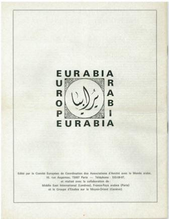

Le dialogue euro-arabe est un chantage dans lequel les intérêts pétroliers l'emportent sur la raison. Prisonnières de leurs alliances avec les pays musulmans, les nations européennes se contraignent à un angélisme naïf face à l'islam, condamnant ceux qui en dénoncent les dangers.
Ce 27 février, L'Union Européenne, par la voix de Federica Mogherini, a tenu une fois de plus à se démarquer de la position américaine sur la question du Proche-Orient.
Lors de la conférence de presse suivant la réunion qui s'est déroulée à Bruxelles entre les 28 ministres européens et une délégation de ministres arabes, la responsable de la politique étrangère de l'Europe a annoncé que « l'Union avait été impliquée depuis suffisamment longtemps dans le conflit pour savoir ce qui marchait et ce qui ne marchait pas ». Un simple préambule pour mettre en garde contre les initiatives de Donald Trump, rejeter une nouvelle fois la reconnaissance de Jérusalem comme capitale d'Israël et annoncer que l'Europe « partageait globalement la position de la Ligue Arabe sur la relance du processus de paix ».
Federica Mogherini. et le secrétaire général de la Ligue des Etats arabes, Ahmed Aboul Gheit Photo: AFP
Cette posture n'est pas une nouveauté mais s'inscrit dans une logique née de pressions datant d'une époque où les besoins en pétrole influençaient la politique étrangère des pays dépendant de l'OPEP.
Rappelons quelques faits historiques.
Le 6 octobre 1973, alors que les Juifs du monde entier célébraient Yom Kippour, le jour le plus sacré du judaïsme, l'Égypte et la Syrie lancèrent une attaque surprise contre Israël, censée contrebalancer la défaite de la Guerre des Six Jours en 1967.
Pris au dépourvu, malgré de nombreux indices qui lui auraient permis de prévenir le conflit, l'État hébreu s'est trouvé en situation de péril immédiat, mais Tsahal, avec l'appui logistique des États-Unis, parvint à résister et finit par repousser l'invasion.
Les pays européens ont vu leur politique étrangère partiellement dictée par les pays producteurs d'or noir.
À l'issue de cette nouvelle défaite, la réaction arabe fut immédiate. Les 16 et 17 octobre, l'OPEP se réunit au Koweït et décida d'augmenter de 70 % le prix du pétrole brut, puis d'imposer une réduction mensuelle de 5 % de sa production jusqu'à l'évacuation des territoires « occupés » et la reconnaissance des droits des Arabes de Palestine, représentés par l'OLP et son leader, Yasser Arafat.
Ces mesures s'assortirent d'un embargo sur les livraisons destinées aux États-Unis et aux Pays-Bas, considérés comme trop « amis » avec Israël, et d'un chantage visant l'Europe, par la classification des pays en fonction de leurs relations avec l'État hébreu.
- Pays amis: tous les pays déclarant qu'Israël devait revenir aux frontières de 67 ou même de 48. C'est-à-dire tous les pays africains, les pays asiatiques et d'Amérique du Sud, les pays communistes ainsi que la France et l'Espagne.
- Pays ennemis: les USA, les Pays Bas, et toute nation apportant son soutien à la nation juive.
- Pays neutres: tous les pays n'appartenant pas à ces deux catégories.
Les prix imposés sur le pétrole dépendaient de cette classification.
Les conséquences pour l'allié israélien, qui souffrait déjà d'un embargo mis en place par le général De Gaulle pendant la Guerre des Six Jours et maintenu par le gouvernement Pompidou, allaient être éprouvantes, mais on peut également s'interroger sur celles affectant progressivement la dignité et l'indépendance de l'Europe.
Car, dès lors, les pays européens se sont retrouvés dans une situation intenable, à la fois contraints de diversifier leur apport énergétique et de voir leur politique étrangère partiellement dictée par les pays producteurs d'or noir.
Cela les conduisit à lancer le « Dialogue euro-arabe » à partir de novembre 1973. Inspiré par la politique arabe de la France, ce « dialogue » consistait selon les termes mêmes de Michel Jobert, ministre des affaires étrangères de Georges Pompidou, à revoir en profondeur les relations entre l'Europe et les pays arabo-musulmans, sur la base « de l'égalité et du respect des intérêts de chacun ».
Mais, profitant de la situation de faiblesse de l'Union en formation, les pays arabo-musulmans ne se sont pas contenté d'imposer leur dictat concernant les relations avec Israël. À la fois affectés par des décennies de colonisation et de protectorat et stimulés par leur indépendance, ils allaient imposer un rééquilibrage des forces et des cultures qui serait accepté d'autant plus rapidement que certaines mouvances étaient déjà en voie de radicalisation et avaient entrepris d'exporter la même forme de terrorisme qui ensanglantait Israël.
Deux ans après la naissance du « Dialogue euro-arabe » le 7 et 9 juin 1975, l'Association Pour la Coopération Euro-Arabe (APCEA) dont elle était la cheville ouvrière, édictait les principes d'un virage de la politique européenne en faveur des pays arabo-musulmans en précisant que « le dialogue euro-arabe est le fruit d'une volonté politique commune qui s'est dégagée au niveau le plus élevé ». Notamment, était inscrit dans sa déclaration que l'Europe devait « reconnaître la contribution historique de la culture arabe au développement européen » et « qu'elle regrettait le caractère d'exception de l'enseignement de la culture et de la langue arabes et qu'elle souhaitait leur développement ».
La Suède a longtemps évité tout débat public sur le terrorisme, allant jusqu'à rejeter le terme de « djihadisme » considéré comme stigmatisant.
Selon l'historienne et essayiste Bat Ye'or, auteur d'Eurabia et de Dhimmitude, toute critique de l'islam devait désormais être bannie et sanctionnée par les pays occidentaux participant à l'APCEA.
Il est important de rappeler que l'islam n'est pas une « race » mais une religion et donc « un système d'idées » en même temps qu'une organisation sociale et politique. C'est pourtant en s'appuyant sur des textes interdisant toute forme de racisme et tout discours haineux à l'égard d'une nationalité ou d'une ethnie que certains pays européens ont récemment promulgué des lois « anti-blasphème », officiellement afin de protéger leurs minorités et la diversité culturelle.
En tête de ce mouvement, la Suède s'est fait remarquer à plus d'une reprise en cataloguant comme forme « d'incitation à la haine » l'utilisation du terme « terrorisme islamique ». Accuser l'islam d'être une forme de fascisme tombe sous le coup de lois pénales suédoises, qui ne concernent pourtant que la race, la couleur de la peau, la nationalité ou l'origine ethnique. Selon la même logique, la Suède a longtemps évité tout débat public sur le terrorisme, allant jusqu'à rejeter le terme de « djihadisme » considéré comme stigmatisant pour sa minorité musulmane. Il est à noter que la Suède est un des rares pays d'Europe à autoriser le burkini dans les piscines municipales, malgré les problèmes hygiéniques associés au maillot de bain islamiste.
En Angleterre, les autorités auraient tendance à minimiser la réalité des viols en tournante, dès lors qu'ils sont commis par des gangs issus de l'immigration, de peur d'être accusées de racisme ou d'islamophobie. La mutilation génitale des fillettes y est réprimandée par la loi, mais sur les 135 000 cas répertoriés de cette atrocité, seulement un infime pourcentage a fait l'objet d'une procédure et d'une condamnation. La raison invoquée par Ivan Balchatchet, responsable d'investigations de la Metropolitan Police: « Ces crimes ont plusieurs nuances ». Il se serait excusé depuis. Entre 2015 et 2017, la police anglaise a répertorié 759 crimes d'honneur et 265 mariages forcés, mais seulement 138 personnes ont été condamnées. Tout autant qu'en Suède, il est mal vu d'employer l'expression « terrorisme islamique », et l'Evening Stantard, le principal observateur des législations antiterroristes en Grande Bretagne, recommanderait de la remplacer par « terrorisme inspiré par Daech ».
En Allemagne, où les assauts sexuels sont monnaie courante, la crainte d'être taxé d'islamophobie est si forte que, récemment, le ministre des affaires familiales a déclaré que pour résoudre le problème des viols liés à l'immigration, celui-ci résultant de la frustration des mâles célibataires, il serait avisé d'importer un plus grand nombre d'immigrés. De sexe féminin, cette fois. Certains maires recommandent aux femmes allemandes de ne pas sortir seules le soir et de se vêtir modestement.
Le journaliste allemand Michael Stürzenberger a, de son côté, été condamné à six mois de prison et 100 heures de travaux d'intérêt public par le tribunal de Munich, pour avoir publié sur sa page Facebook une photo du Grand Mufti Hadj Amin al-Husseini, premier nationaliste palestinien et nazi notoire, en compagnie d'Hitler. Le juge a déclaré Stürzenberger coupable « d'incitation à la haine envers l'islam » et d'avoir « dénigré l'islam en publiant la photo, car un observateur non informé ne pouvait savoir que cette photographie en noir et blanc était un document historique »
La liste des concessions faites au nom de ce « dialogue », maintenu ouvert pendant plus de quarante ans, est longue et inclut des anecdotes, comme le retrait d'une croix d'un tribunal pendant le jugement d'un meurtrier afghan, l'annulation d'une collection H&M car sa disposition ressemblait à une prière arabe inversée ou encore l'instauration d'une « journée mondiale du hijab » par un immigrant du Bangladesh et suivie par plusieurs députés du parti travailliste anglais.
Pendant ce temps, en Iran, plus de trente femmes ont été incarcérées et torturées pour avoir rejeté leur hijab, que l'ancien ministre des égalités anglais Dawn Butler promotionne chaque année, au nom de la tolérance et de la liberté de culte.
En Hollande, c'est en vain que Ayaan Hirsi Ali, réfugiée somalienne élue membre du parlement après l'assassinat de Theo Van Gogh, s'est insurgée contre la dawa, c'est-à-dire « l'invitation » à rejoindre l'islam, telle que préconisée par Youssef al-Qardaoui, leader spirituel des Frères musulmans.
L'islam étant, selon son fondateur le prophète Mahomet, la « religion de vérité qui concerne l'humanité tout entière », la dawa n'est qu'une forme de prosélytisme intellectuel, précédant le djihad.
Les gouvernements successifs n'ont su que jouer la carte de l'apaisement au détriment de la vérité
Déçue par l'attitude soumise du gouvernement hollandais, la jeune femme qui avait été victime de mutilation génitale pendant son enfance s'est expatriée aux États-Unis où elle milite pour l'indépendance et l'égalité des femmes musulmanes, tandis que sa rivale de fait,Linda Sarsour, utilise la même plateforme féministe pour promouvoir le hijab et la haine antisémite sous couvert d'un antisionisme de bon ton.
La France n'est pas à l'abri de ces compromissions, même si l'interdiction de porter le voile dans les écoles et administrations est une mesure destinée à renforcer le caractère laïc de la République. L'affaire Sarah Halimi, torturée et défenestrée par un voisin musulman aux cris de « Allahu Akbar » est symptomatique de la gêne éprouvée par les institutions publiques lorsqu'il s'agit de qualifier d'antisémite un meurtre attribué hâtivement à l'abus de drogue et à un déséquilibre mental. Il aura fallu l'intervention du Président Macron, puis toute la pression d'un procureur intègre pour que la juge d'instruction finisse enfin par retenir la notion d'acte aggravé par l'antisémitisme.
Terrorisés à l'idée d'importer le conflit israélo-arabe sur le sol français, les gouvernements successifs n'ont su que jouer la carte de l'apaisement au détriment de la vérité, en usant du vocabulaire le plus neutre possible lorsque l'islamisme était impliqué. C'est ainsi que le terme « déséquilibré » remplace le plus souvent celui de « terroriste islamiste », qu'il est rappelé régulièrement que l'islam est une religion d'amour et de paix, et que les casseurs de banlieues sont renommés « jeunes » en vertu de directives gouvernementales retenues par les médias.
Dans le même esprit, il faudrait peut-être se demander pourquoi les Femen ne sont quasiment jamais poursuivies pour leurs actions contre les symboles du christianisme, alors que Christine Tasin, dont le propos de cet article n'est pas de défendre le combat, a de son côté été condamnée à verser à la LICRA une amende de 1 500 euros pour les « propos islamophobes » qu'elle avait prononcés après l'assassinat d'un policier et de sa femme par un djihadiste à Magnanville, dans les Yvelines.
Serait-ce que l'islam fait davantage peur que les autres religions?
Pressions pétrolières d'un côté, menace terroriste de l'autre, il y aurait effectivement à craindre, non pas d'un islam modéré et cantonné au religieux dans le cadre de la liberté d'expression et de culte, mais de sa version combattante et prosélyte.
Mais attention! Là encore il y aurait, en Europe, des limites. Car, étymologiquement, la peur de l'Islam se dit: islamophobie.


Partager cette page